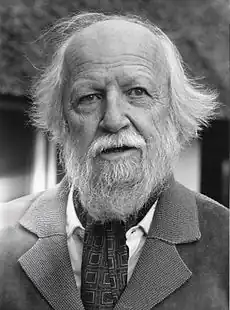
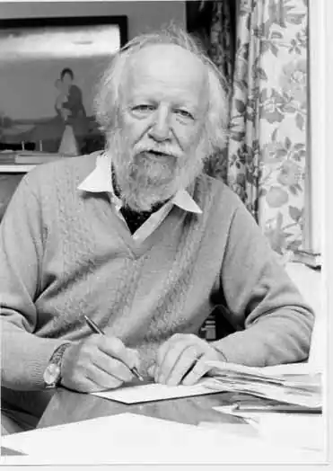

Біографія
(19.09.1911 — 19.06.1993)
Англійський письменник Вільям Джеральд Голдінг народився в селі Сент-Колам-Майнер (графство Корнуолл). Його батько, шкільний вчитель Алек Голдінг, про який згодом син відгукувався як про блискучому ерудиті, був раціоналістом, мати – феміністкою. Молодий чоловік навчався в мальборской середній школі і в Оксфордському університеті, де за бажанням батьків протягом двох років вивчав природничі науки. Потім Голдінг, який писав з 7 років почав займатися англійської філологією і в 1934 році, за рік до отримання ступеня бакалавра мистецтв, випустив збори віршів. Закінчивши Оксфорд, Голдінг перший час працював у соціальній сфері; у цей період він писав п'єси, які сам же й ставив у невеликому лондонському театрі. У 1939 р. початківець літератор одружився з Енн Брукфілд, спеціалістка з аналітичної хімії, і влаштовується викладати англійську мову і філософію в школу єпископа Водсворта в Солсбері, де він пропрацював за винятком військових років до 1961 р. З 1940 по 1945 р. Р. служить у військово-морському флоті. До кінця війни він командував ракетоносцем і брав участь у висадці союзників у Нормандії. Після звільнення з флоту Р. повертається до викладацької діяльності в Солсбері, де незабаром приступає до вивчення давньогрецької мови і пише чотири романи, жоден з яких опублікований не був. Тим не менш, він продовжує свої літературні спроби, і в 1954 р., після того як рукопис його роману відкинув двадцять один видавець, видавництво "Фейбер енд Фейбер" випускає "Повелителя мух" ("Lord of the Flies"), і роман негайно стає у Великобританії бестселером. Незважаючи на те, що вже в наступному році "Повелитель мух" видали і в Америці, популярність у американського читача Р. завоював тільки після перевидання роману у 1959 р. Ще більше визнання письменник одержав у 1963 р., коли англійський режисер Пітер Брук зняв за романом фільм. Друга світова війна справила вирішальний вплив на погляди Р., який, виходячи з досвіду воєнних років, говорив: "Я почав розуміти, на що здатні люди. Кожен, що пройшов війну і не зрозумів, що люди творять зло подібно до того, як бджола виробляє мед, – або сліпий, або не в своєму розумі". Низинна природа людини стає головною темою "Повелителя мух". Цей роман, який за популярністю не поступався "Над прірвою у житі" Дж.Д. Селінджера, розійшовся накладом понад 20 млн. примірників. Книга була задумана як іронічний коментар до "Коралового острова" Р. М. Баллантайна, пригодницької історії для юнацтва, де оспівуються оптимістичні імперські уявлення вікторіанської Англії. Сюжет "Володаря мух" зводиться до опису того неминучого процесу, в результаті якого група висаджених на безлюдному острові підлітків, вихідців із середнього класу, поступово перетворюється в дикунів. Їх взаємовідносини з демократичних, раціональних та моральних стають тираническими, кровожерними і хибними – справа доходить до первісних обрядів і жертвоприношень. У символічному плані роман є скоріше релігійної, політичної чи психологічної притчею, ніж реалістичним оповіданням. Алегоричний характер творів Р. викликав численні критичні суперечки. Деякі критики стверджували, що іносказання не тільки обтяжує оповідання, але є, крім усього іншого, претензійною, недоречним і натягнутим. У 1961 р., пропрацювавши рік в Холлинзколледже у Вірджинії (США), Р. припиняє викладацьку діяльність і повністю присвячує себе літературі. До цього часу він випустив ще три романи – "Спадкоємці" ("The Inheritors", 1955), "Злодюжка Мартін" ("Pincher Martin", 1956) і "Вільне падіння" ("Free Fall", 1959), а також п'єсу "Мідна метелик" ("The Brass Butterfly", 1958). Подібно "Повелителя мух", роман "Спадкоємці" також полемізує з твором іншого письменника – на цей раз з "Нарисом історії" Герберта Уеллса, сповненим оптимістичної віри в раціоналізм і прогрес. Р. зазначав, що книга Уеллса зіграла велику роль в його житті, оскільки його власний батько був раціоналістом і "Нарис історії" вважався "істиною в останній інстанції". У "Спадкоємцях" письменник створює страшну картину загибелі неандертальців від руки Homo sapiens: по Р., перші є нашими благородними, простими і безневинними предками, а другі – жорстокими й кровожерливими вбивцями. Третій з романів, об'єднаних ідеєю боротьби за виживання, "Злодюжка Мартін" оповідає про потерпілого корабельна аварія морському офіцерові, карабкающемся на скелю, який він приймає за острів. Спочатку читач захоплюється героїчними зусиллями Мартіна, його волею до життя; проте потім, познайомившись з героєм ближче, коли стає відомо про його життя, зосередженого на самому собі, у читача виникає відраза до його чіпкості, яку Р. іронічно порівнює із завзятістю Прометея. Зрештою стає ясно, що насправді герой уже мертвий і його видиме існування є добровільним чистилищем, відмовою прийняти Божу милість і померти. Роман "Вільне падіння" на відміну від перших трьох романів Р. не иносказателен, однак тематично відповідає іншим творам письменника: і тут відбувається перехід від дитячої невинності до вини дорослої людини, конфлікт між релігією і раціоналізмом, міфом і історією. Роман "Шпиль" ("The Spire", 1964), дія якого відбувається в англійському місті XIV ст., є, на думку деяких критиків, кульмінацією творчості Р. як з точки зору ідейного змісту, так і художньої майстерності. У "Шпилі" реальність і міф переплітаються ще сильніше, ніж у "Повелителі мух". Тут Р. знову звертається до суті людської природи і проблеми зла. Головний герой роману, настоятель Джослін, вирішує прикрасити собор шпилем, щоб "піднести молитву в камені" будь-якою ціною, незважаючи на втрату грошей, щастя, життя або навіть самої віри. Спроба Джосліна впоратися з каменем – це метафора іншого роду: Р. уподібнює Джослину себе, письменника, намагається "справитися" зі своїм літературним матеріалом. Англійські критики Марк Кинкид-Вікс і Ян Грегор вважають, що "Шпиль" знаменує собою поворотний момент у житті Р., бо подальше творчість письменника розвивалося по двох незалежних напрямках – метафізичного і соціального. Ці критики вказують також, що для американських читачів ближче метафізична манера "Зримою темряви" ("Darkness Visible", 1979), тоді як для англійців краще соціальний аналіз "Ритуалу на морі" ("Rites of Passage", 1980), книги, що отримала в тому ж році премію "Букерз". У 1982 р. Р. випускає збірку есе на тему "Рухома мішень" ("A Moving Target"). У більш ранній збірник "Гарячі врата" ("The Hot Gates", 1965) включені публіцистичні та критичні статті та нариси, написані в 1960 Р….1962 рр. для журналу "Спектейтор" ("The Spectator"). В 1983 р. була присуджена Нобелівська премія з літератури "за романи, які з ясністю реалістичного розповідного мистецтва в поєднанні з різноманіттям і універсальністю міфу, допомагають осягнути умови існування людини в сучасному світі". Для багатьох вручення премії Р. стало несподіванкою: англійською кандидатом, привернув увагу читаючої публіки, був Грем Грін. В ході дискусії про найбільш гідного кандидата один з членів Шведської академії, літературознавець Артур Лунквист, порушивши традицію, проголосував проти обрання Р., заявивши, що Р. – явище суто англійське і його твори "не представляють істотного інтересу". "Романи і розповіді Р. – це не тільки похмурі моралі і темні міфи про зло і зрадницьких руйнівних силах, – сказав в свій промові представник Шведської академії Ларс Июлленстен, – це ще й цікаві пригодницькі історії, які можуть читатися заради задоволення". У Нобелівській лекції Р. в жартівливій формі піддав сумніву свою репутацію безнадійного песиміста, сказавши, що він "універсальний песиміст, але космічний оптиміст". "Розмірковуючи про світ, яким править наука, я стаю песимістом… проте я оптиміст, коли згадую про духовний світ, від якого наука намагається мене відволікти… Нам треба більше любові, більше людяності, більше турботи". В рік отримання Нобелівської премії Р. працював над романом "Паперові люди" ("The Paper Men"), який вийшов в Англії і Сполучених Штатах в 1984 р. У книзі йдеться про психологічну і духовну боротьбу між літнім англійським письменником Вілфрідом Барклеем і амбітним американським академіком Ріком Такером, який мріє отримати авторизовану біографію Барклея. "На одному рівні, – писав англійський критик Блейк Моррісон, – це захист таланту від загрози, що нависла над живим письменником… у вигляді мертвої руки наукообразия. На іншому ж рівні Такер може розцінюватися або як христоподобный образ, искупающий гріхи Барклея, або як сатана… спокуса якого Барклей повинен відкинути". Роман "Паперові люди" отримав в Англії і США суперечливі відгуки. Упродовж творчого життя Р. оцінювався критикою по-різному. Наприклад, американський критик Стенлі Едгар Хаймен вважає, що Р. "є самим цікавим сучасним англійським письменником". Його думку поділяє англійський новеліст і критик В. С. Притчет. У той же час Фредерік Карл критикує Р. за його "нездатність дати інтелектуальне обгрунтування своїх тем", а також за "дидактичний тон майже у всіх книгах". "Його ексцентричним темами бракує рівноваги і зрілості, які свідчать про літературну майстерність", – вважає Карл. Р. був обраний членом Королівського суспільства літератури в 1955 р. і присвячений в лицарі в 1966 р. В даний час він живе зі своєю дружиною в графстві Вілтшир біля Солсбері, у нього двоє дітей: син Девід і дочка Джудіт. В молодості письменник був завзятим моряком, тепер же він любить грати на фортепіано, займатися грецькою мовою і читати літературу з археології.